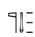
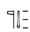
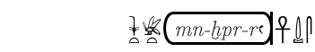

Alphabetic Text
alphabetic text is introduced by "+" followed by :
 l for latin script
l for latin script
 i for italic script
i for italic script
 b for bold script
b for bold script
 t for translitteration (anx wDA snb)
t for translitteration (anx wDA snb)
 c for coptic script (not yet)
c for coptic script (not yet)
 h for hebrew script (not yet)
h for hebrew script (not yet)
 g for greek script (not yet)
g for greek script (not yet)
 r for cyrillic script (not yet)
r for cyrillic script (not yet)
 + for comments (comments are invisibles)
+ for comments (comments are invisibles)
 s to revert to hieroglyphs
s to revert to hieroglyphs
Notes * the manual says nothing about the encoding of coptic, greek, hebrew or cyrillic !
 * you should go back to the hieroglyphic mode (+s) before the end of the line
* you should go back to the hieroglyphic mode (+s) before the end of the line
Exempli gratia :
 +l this is a text +iwith italics and +s nTr-md-Z3A++ and a comment+s-!
+l this is a text +iwith italics and +s nTr-md-Z3A++ and a comment+s-!
gives
 this is a text with italics and 
this is a text with italics and 
In Jsesh, you can easily include a + sign in a latin text ;
simply write \+ (this is not in the manuel)
You can write text in cartouches :
 sw:t-bit:t-<-+tmn-xpr-ra+s->-anx-DA-s
sw:t-bit:t-<-+tmn-xpr-ra+s->-anx-DA-s

Superscript (line numbers)
Superscript is done by writing "|your text-" . e.g
 |R(1),[1.1]-z:A1*Z1-p-Z7-wn:n-i-n:p*Z7-E15-x:D43-Z7-Y1:n-A1-r:n-f-
|R(1),[1.1]-z:A1*Z1-p-Z7-wn:n-i-n:p*Z7-E15-x:D43-Z7-Y1:n-A1-r:n-f-

Line skips
Line skips are indicated by "-!"
If a line skip is of the form by "-!=number%", a space of number percent times the normal skip is skipped
 e.g. four time the normal skip : -!=400%
e.g. four time the normal skip : -!=400%
next line
New pages
new page are indicated by -!!